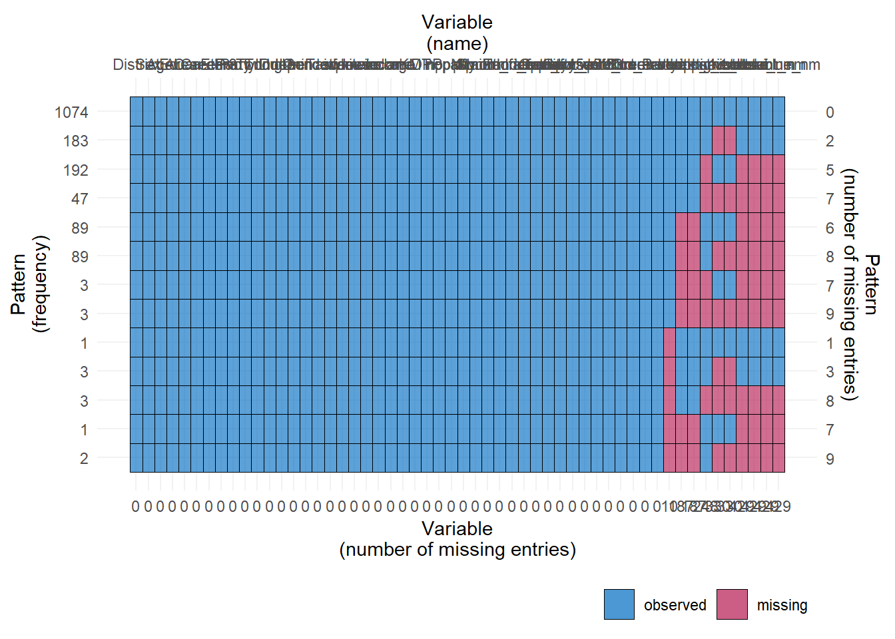
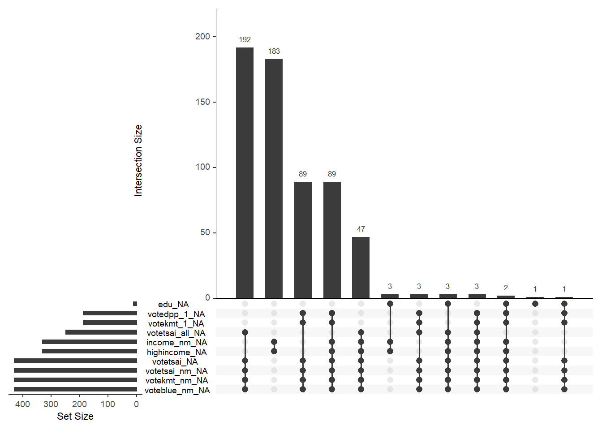
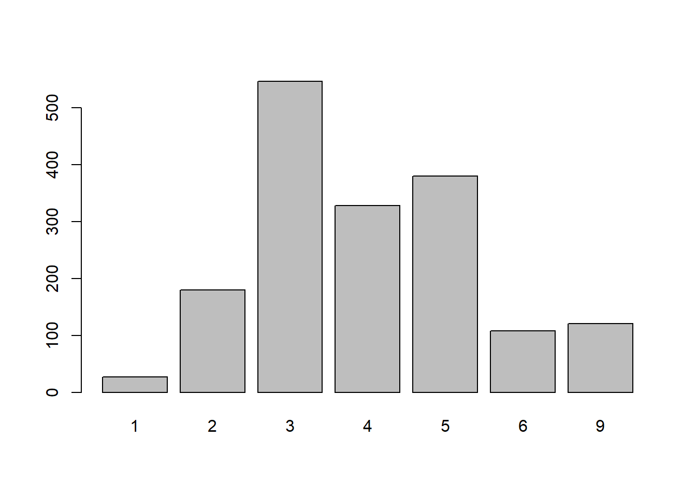
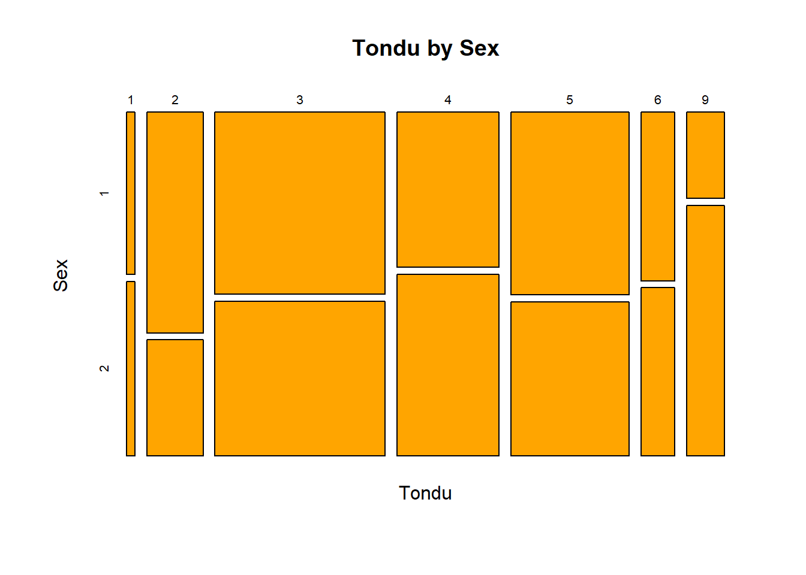
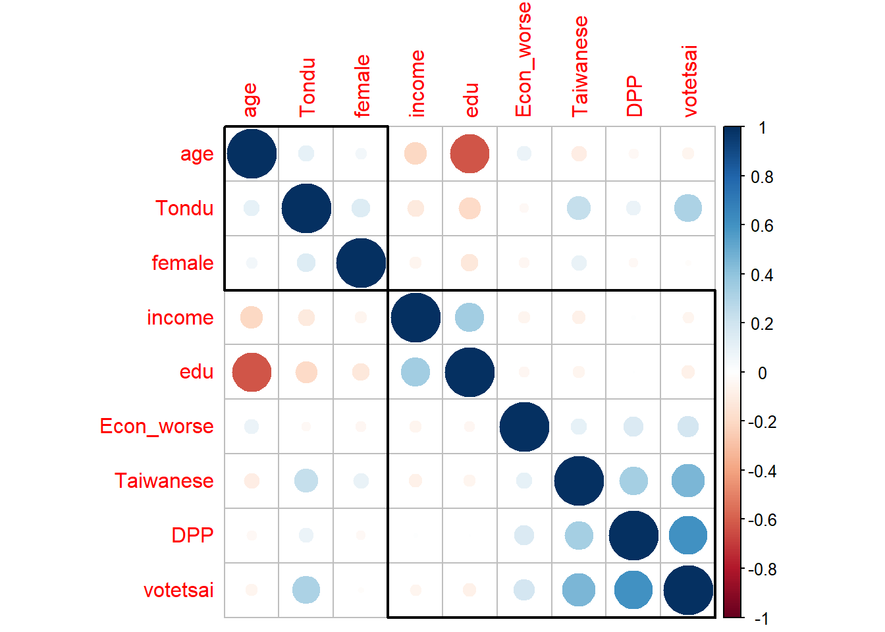

-- Attaching packages --------------------------------------- tidyverse 1.3.2 --
v tibble 3.1.8 v dplyr 1.0.10
v tidyr 1.2.1 v stringr 1.4.1
v readr 2.1.3 v forcats 0.5.2
v purrr 0.3.5
-- Conflicts ------------------------------------------ tidyverse_conflicts() --
x dplyr::filter() masks stats::filter()
x dplyr::lag() masks stats::lag()
library(Ecdat)
Loading required package: Ecfun
Attaching package: 'Ecfun'
The following object is masked from 'package:base':
sign
Attaching package: 'Ecdat'
The following object is masked from 'package:datasets':
Orange
District Sex Age Edu Arear
0.00000000 0.00000000 0.00000000 0.00000000 0.00000000
Career Career8 Ethnic Party PartyID
0.00000000 0.00000000 0.00000000 0.00000000 0.00000000
Tondu Tondu3 nI2 votetsai green
0.00000000 0.00000000 0.00000000 0.25384615 0.00000000
votetsai_nm votetsai_all Independence Unification sq
0.25384615 0.14674556 0.00000000 0.00000000 0.00000000
Taiwanese edu female whitecollar lowincome
0.00000000 0.00591716 0.00000000 0.00000000 0.00000000
income income_nm age KMT DPP
0.00000000 0.19526627 0.00000000 0.00000000 0.00000000
npp noparty pfp South north
0.00000000 0.00000000 0.00000000 0.00000000 0.00000000
Minnan_father Mainland_father Econ_worse Inequality inequality5
0.00000000 0.00000000 0.00000000 0.00000000 0.00000000
econworse5 Govt_for_public pubwelf5 Govt_dont_care highincome
0.00000000 0.00000000 0.00000000 0.00000000 0.19526627
votekmt votekmt_nm Blue Green No_Party
0.00000000 0.25384615 0.00000000 0.00000000 0.00000000
voteblue voteblue_nm votedpp_1 votekmt_1
0.00000000 0.25384615 0.11065089 0.11065089
plot_pattern(TEDS_2016)

TEDS_2016 %>%# Create an UpSet plotgg_miss_upset(., nsets =10)

table(TEDS_2016$Tondu)
1 2 3 4 5 6 9
27 180 546 328 380 108 121
Some plots
barplot(table(TEDS_2016$Tondu))

counts <-table(TEDS_2016$Tondu, TEDS_2016$Sex)mosaicplot(counts, xlab='Tondu', ylab='Sex',main='Tondu by Sex', col='orange')

Correlation plots
sel_dat<-TEDS_2016%>%select(Tondu,female, DPP, age, income, edu, Taiwanese, Econ_worse,votetsai)cormat <- sel_dat %>%cor(., use ="pairwise.complete.obs")corrplot(cormat, # correlation matrixorder ="hclust", # hierarchical clustering of correlationsaddrect =2) # number of rectangles to draw around clusters

ggcorrplot(cormat, # correlation matrixtype ="lower", # print the lower part of the correlation matrixhc.order =TRUE, # hierarchical clustering of correlationslab =TRUE) # add correlation values as labels